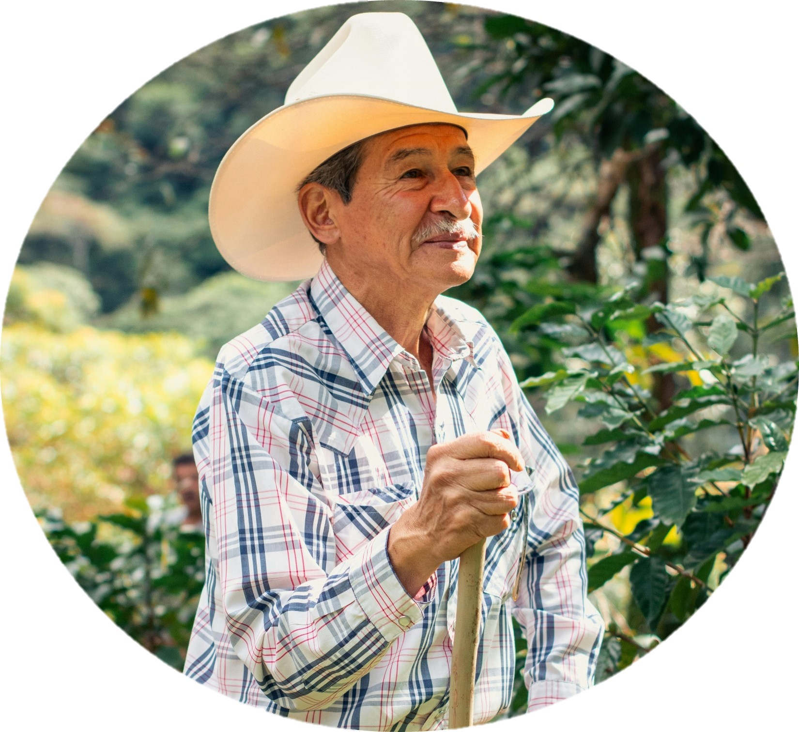

Caficultor
Finca El Paraíso
Bienvenido
Panel caficultor
Gestiona tus cultivos, revisa recomendaciones y consulta el asistente inteligente para tomar mejores decisiones en tu produccion cafetera.
Lotes activos
6 2 en floracionAlertas de plagas
2 Broca y roya en revisionCosecha estimada
840 kg Proximo corteLabores pendientes
5 Esta semanaEstadisticas
Recomendaciones
Aprendizaje
Prevencion, monitoreo y control responsable.
Buenas practicas para cada etapa del cafe.
Mejora la calidad del grano y reduce perdidas.
Agenda
| Actividad | Lote | Fecha | Estado |
|---|---|---|---|
| Revision de broca | Lote 2 | Hoy | Pendiente |
| Aplicacion de fertilizante | Lote 4 | 30 mayo | Programada |
| Registro de cosecha | Lote 1 | 2 junio | Lista |
Asistente inteligente
Vision artificial
Resultado simulado
Nivel de riesgo: medio. Se recomienda revisar frutos afectados y registrar el lote para seguimiento.